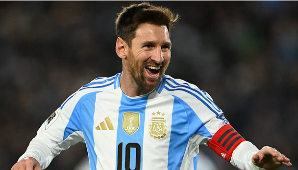

Soccer Weekly
| Image | Author | Source |
|---|---|---|

|
Callum Altimas | GiveMeSport – Messi Photo |

|
Riccardo (Pexels) | Pexels – Stadium Photo |

|
Shreya Gupta | AD – World Cup Trophy Article |

|
Alex Harris, Ned Holmes | RadioTimes – Best Young Players 2025 |

|
AnalyiSport | AnalyiSport – Star Data Analysts Image Source |

|
Ferry Tri Adi Sasono | Voi.id – Messi Photo 2 |
|  | Amanda Langell | si.com – Messi International Landmark |